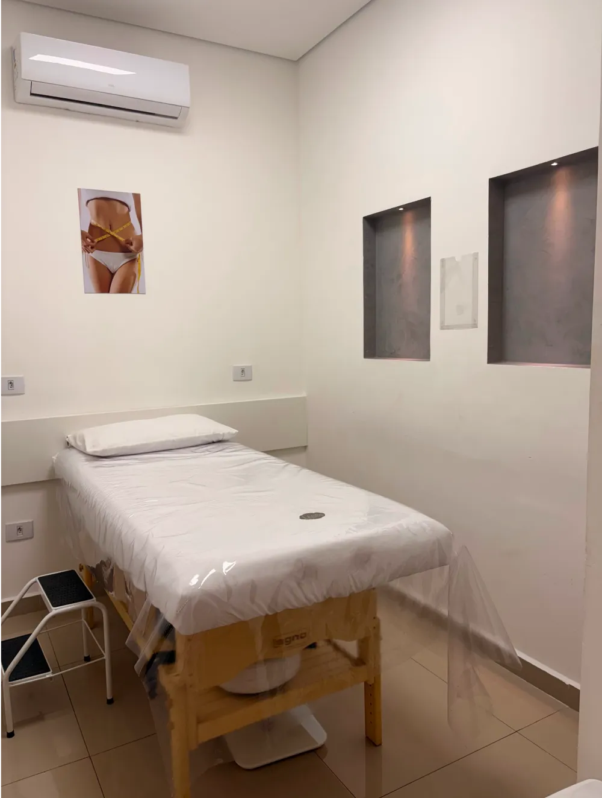
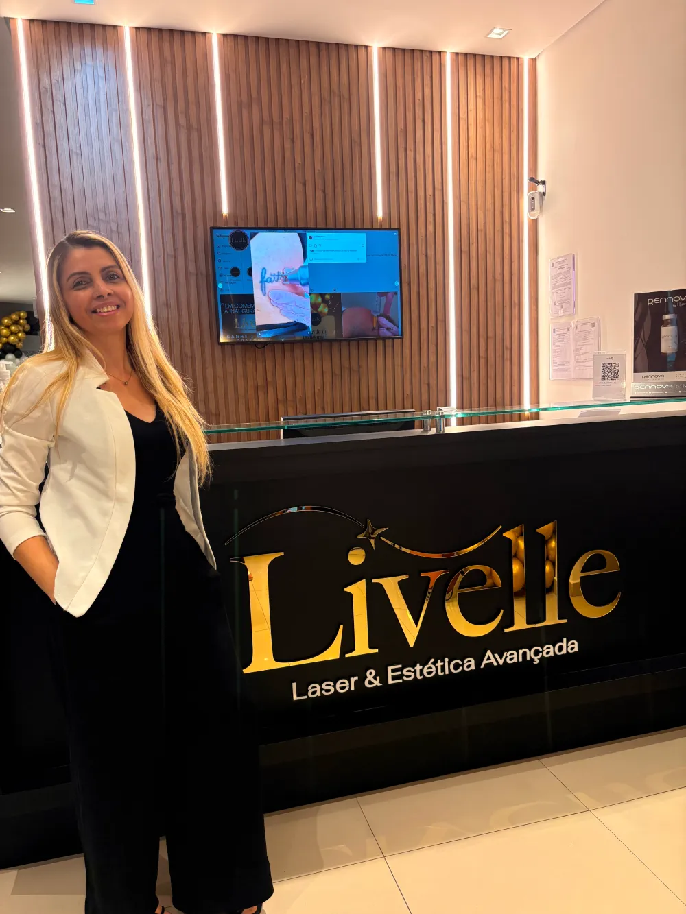

Depilação a laser na Tijuca
Livre-se dos pelos indesejados com tecnologia laser de diodo para todos os tipos de pele. Resultados comprovados, tratamento confortável e duradouro, com avaliação antes da primeira sessão.

O que muda com o laser de diodo
Todos os tipos de pele
O diodo trabalha com comprimento de onda seguro para peles claras a negras, ajustado na avaliação.
Sessões rápidas
Áreas pequenas levam poucos minutos; as grandes cabem no intervalo do almoço.
Mais confortável
O sistema de resfriamento da ponteira reduz o desconforto durante a aplicação.
Resultado duradouro
A redução é progressiva a cada sessão e se mantém com o acompanhamento da equipe.

A tecnologia que usamos
Laser de diodo de última geração, com equipamentos certificados pela ANVISA e profissionais certificados e em constante atualização.
- Protocolo montado para o seu tipo de pele e de pelo
- Produtos de primeira linha, com qualidade comprovada
- Acompanhamento completo, da avaliação à manutenção
O número de sessões varia conforme o tipo de pele, a espessura do pelo, a área tratada e fatores hormonais. A equipe estima o seu protocolo na avaliação, sem compromisso.
Modalidades
Depilação a laser feminina
Conquiste pele lisa e livre de pelos com sessões rápidas, seguras e duradouras.
Falar sobre depilação femininaDepilação a laser masculina
Reduza os pelos de forma prática e definitiva, com resultados eficazes para o público masculino.
Falar sobre depilação masculinaRemoção de tatuagem
Elimine tatuagens indesejadas de forma eficaz e segura com tecnologia a laser, sem agredir a pele.
Falar sobre remoção de tatuagemComo funciona o seu tratamento
Quatro etapas, da primeira conversa à manutenção.
Avaliação
A equipe analisa pele, pelo e área, tira dúvidas e confirma se o laser é indicado para você.
Protocolo
Definimos parâmetros do equipamento, número estimado de sessões e intervalo entre elas.
Sessões
As aplicações seguem o ciclo de crescimento do pelo, com orientação de cuidados a cada retorno.
Manutenção
Terminado o protocolo, ajustamos a frequência conforme a resposta da sua pele.
Áreas atendidas
Preparo e cuidados
O resultado depende tanto da sessão quanto do que acontece antes e depois dela.
Antes da sessão
- Raspe a área com lâmina de 24 a 48 horas antes, sem usar cera nem pinça
- Evite exposição solar e autobronzeador nos dias anteriores
- Vá com a pele limpa, sem creme, desodorante ou maquiagem na área
- Avise a equipe sobre medicamentos em uso e condições de pele
Depois da sessão
- Use protetor solar na área todos os dias
- Evite sauna, piscina e exercícios intensos nas primeiras 24 horas
- Hidrate a pele e não esfolie a região nos primeiros dias
- Entre as sessões, remova os pelos apenas com lâmina
Dúvidas sobre depilação a laser
Quantas sessões vou precisar?
Varia conforme o tipo de pele, a espessura e a cor do pelo, a área tratada e fatores hormonais. A estimativa é feita na avaliação, antes da primeira sessão, e revisada ao longo do tratamento.
Dói?
A sensação mais relatada é de um leve estalo quente. O sistema de resfriamento da ponteira reduz bastante o desconforto, e a potência é ajustada ao seu limiar durante a sessão.
Funciona em pele negra ou bronzeada?
O laser de diodo atende todos os tipos de pele, com parâmetros ajustados caso a caso. Pele recém-bronzeada, porém, exige espera: a avaliação define o momento seguro para começar.
Preciso parar de depilar entre as sessões?
Cera, pinça e linha precisam ser suspensas, porque removem a raiz, que é justamente o alvo do laser. Entre as sessões, use apenas lâmina.
Posso fazer no verão?
Pode, desde que a área não esteja bronzeada e você use protetor solar diariamente. A equipe orienta o cuidado conforme a área tratada.
Como faço para começar?
Chame a clínica no WhatsApp e agende a avaliação. Ela é o primeiro passo de qualquer protocolo e serve para definir se o laser é indicado para o seu caso.
Agende sua avaliação de depilação a laser
A avaliação é sem compromisso e define o protocolo antes de qualquer sessão.
- Endereço
-
Livelle Estética Avançada
Rua Pinto de Figueiredo, 43, Loja
Tijuca, Rio de Janeiro, RJ - Horário de funcionamento
- Segunda a sexta, 8h às 19h
Sábado, 8h às 14h